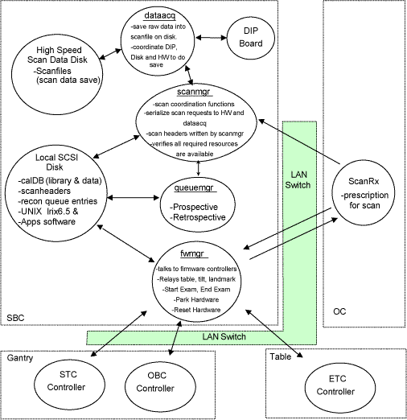
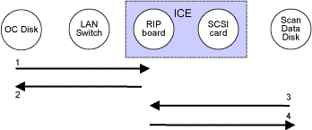
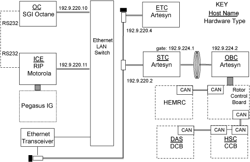
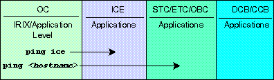
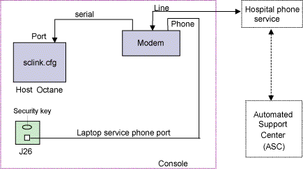
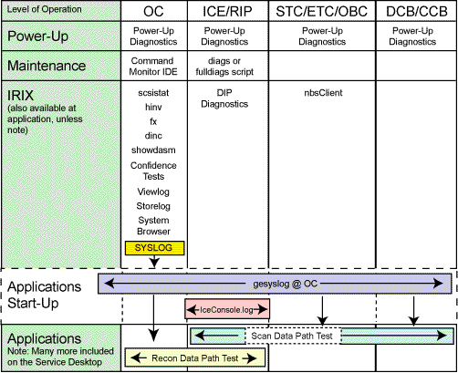

Proprietary to General Electric
Direction 5114043-800, Rev# 9
LightSpeed 3.X Service Methods (Advanced)
Proprietary to General Electric |
Data Flow Description: The Scan Control minor function directs and monitors dataacq, fwmgr, queuemgr, scanmgr and scanRx software processes associated with taking a scan. It is the initiator of commands for these scanning processes.
Illustration 1: Functional Software Process Diagram Across Hardware Boundaries

The scan control communication paths from the OC to the SRU and vice versa use the same path across the LAN Switch.
dataacq, fwmgr, queuemgr and scanmgr processes are initiated by Applications startup on the SBC can be considered software FRU's of Scan Control. If any of these processes were to crash, Applications would need to be restarted.
The cal database exists on the SBC's Local SCSI Disk.
A map of the scan file database is maintained in the RIP memory. This map defines the state of all the scan files in the scan file database, but contains none of the scan file data or scan file header information. Maintaining the map allows scan file management to be higher performance than if the map was not maintained.
The raw scan data is stored in files on the Scan Data Disk. The Scan Data Disk is mounted on /raw_data. The remainder of the scan data is stored as scan headers on the OC Disk. The scan headers are located in /usr/g/data_management. Both the /raw_data and /usr/g/data_management directory trees share a common structure. Each directory contains the scan data for a single exam, with the directory name indicating suite ID, exam number, and a unique id. Within each directory, each scan is stored as an individual file, with the file name indicating series number and scan number.
Both the /raw_data and /usr/g/data_management directory trees contain recovery directories for analysis of scan. This recovery is used to move corrupted scan headers or scan data detected on startup.
The /usr/g/data_management tree contains additional files within the exam directories. They are used for list/select processing and for locking scan files.
Each view data file should have exactly one corresponding scan header file. If there is a mismatch, it will be detected at start-up or when the scan is referenced.
During system start-up, a map of the scan file database is created by looking through the /raw_data and /usr/g/data_management directory trees. If view data files are found without corresponding scan header files, appropriate errors are reported in the gesyslog and the orphaned view data files are removed. If scan header files are found without corresponding view data files, appropriate errors are reported in the gesyslog and the orphaned scan header files are removed. The most common cause of orphaned files is when the power goes off while scanning. In that case, the orphaned files are place-holders for the scans that had not yet been collected when power went out, because space is reserved before the scan is actually started.
Once the scan files have been identified, the list/select information is checked. If an orphaned scan header file had been detected in an exam, or at least one scan has been deleted in an exam, part of each scan header file will be read and the list/select information reconstructed. While reading the scan header files, some checking is performed and invalid scan files are identified.
If the system terminated unexpectedly the last time applications were running, which usually is caused by a power failure, all of the list/select information files are recreated, which causes all of the scan header files to be checked for consistency.
Only rarely do Scan File Management errors indicate the need to replace a FRU. Typically, an error reported by Scan File Management indicates an installation defect, such as missing OS packages, missing files, improper permissions, or corruption of scan file structure because of an abnormal software shutdown or a power failure. A common hardware problem is no power to the scan data disks.
Illustration 2: Scan Data Base Management - Behavioral Signal and Process Flow Diagram

Table 1: Scan Data Base Management - Functional Operation & Troubleshooting
| Signal Flow # | Software Function | Associated Errors | FRU(s) Involved |
|---|---|---|---|
| 1 | read scan headers | /usr/g/data_management in message | SRU or local disk |
| 2 | write to recovery if error | /usr/g/data_management in message | SRU or local disk |
| 3 | read raw data | /raw_data in message | SRU or scan data disk |
| 4 | write to recovery if error | /raw_data in message | SRU or scan data disk |
Applicable Diagnostic Coverage:
ScanDataPath Diags
ReconDataPath
HighSpeed Disk Diagnostics
Description - The internal network interface is the communication link between all the computers in the system. The ethernet LAN Switch interconnects the OC to the VME Image Construction Engine (ICE) via 100BaseTX. The LAN Switch also has one 10Base2 ethernet port for communicating to the scan controllers in the STC, OBC and ETC. The ethernet LAN switch isolates the 100Mb/s transmissions from the 10Mb/s transmissions during system operation.
Illustration 3: Internal Network Interface - Block Diagram

Illustration 4: Checking Communications - IRIX Commands

Description - Establishing Insite Connectivity from the Scanner to the Automated Support Center (ASC) is accomplished by following the Insite Checkout Procedure during installation. The following steps are involved in the process:
The FE is required to call the On-Line center and request a unique system number and ID for Insite serviceability.
During Insite checkout, the site’s name and IP address are placed into the OLC/ASC database.
The OLC assigns a unique system ID and number for that particular scanner to reference, and places that information into a file called sclink.cfg. The sclink.cfg file is downloaded from the support center to the scanner through the modem for Insite operation.
| NOTE: | In cases where the scanner is not connected to a hospital network, the OLC will assign a unique GE IP address for that site’s modem. |
Sites doing a Load From Cold can save the Insite configuration files; sclink.cfg & insiteINFO (parameters from previous run of installinsite) prior to the load via System State INFO, and restore it when prompted during the configuration part of the load. Upon completion of the load, the Insite Auto Checkout procedure should be done by running installinsite. The procedure will call the Automated Support Center (ASC) and request that the they dial back into the scanner to verify the Insite connection, which also verifies that the sclink.cfg and insiteINFO on the scanner are valid.
J26 on the front of the console can be used by the FE to gain access to GEMS (e-mail etc) when Insite is NOT logged in. From the FE’s laptop, connect the phone line from laptop modem to J26.
Illustration 5: InSite Connectivity Block Diagram

Notes & Tips:
Errors associated with PPP Connection problems are logged to the OC in /var/adm/SYSLOG.
The following is a summary of diagnostics available for the console hardware.
Illustration 6: Console Hardware Diagnostics

LEDS ON PDU CONTROL BOARD
There are 17 LEDs on the PDU Control Board. See the below illustration:
Illustration 7:

The ON / OFF status of these LEDs are explained in the below table:
Table 2: LED Description
| LED ON CONTROL BOARD | DESCRIPTION | ERROR | CLASS | TROUBLESHOOTING | ||
|---|---|---|---|---|---|---|
| ID | NAME | ON | OFF | |||
| DSD1 | Voltage Fault | It’s for HVDC - If the differential buss voltage exceeds 500Vdc within the first 200mS after turning on the PDU Control board, control board shall detect and latch a VFLT condition and shall issue a "VFLT". i.e. DSD1 light. | If the contactors Kxg and/or Kss are closed, the control board should not have this issue.i.e. DSD1 OFF. | DSD1 LED ON (RED) | Error |
|
| DSD2 | BUSS Fault | It’s for HVDC - If the differential buss voltage does not exceed 200Vdc within the first 200mS after turning on the PDU Control board, control board shall detect and latch a BS_FLT condition and shall issue a "BUSS_FLT". i.e. DSD2 light. | If the contactors Kxg and/or Kss are closed, the control board shall open them,i.e. DSD2 OFF. | DSD2 LED ON (RED) | Error |
|
| DSD3 | RDY light | This is the "Generator Ready" Light. NGPDU provides isolated terminals KD7 for customer Room Light connections. | This means the "Generator is not ready.". | DSD3 LED OFF (GREEN) | Status |
|
| DSD4 | X-ray light | From the Gantry to close the "X-Ray ON" Light . NGPDU provides isolated terminals KD7 for customer Room Light connections. | This means the X-ray shouldn’t be ON from Gantry signal. | DSD4 LED OFF (GREEN) | Status |
|
| DSD5 | SYS light | Input signal from the Gantry to close the"System ON" Light relay. NGPDU provides isolated terminals KD5 for customer Room Light connections. | System OFF | DSD5 LED OFF (GREEN) | Status |
|
| DSB1 | HV- | Has HVDC- | No HVDC- | DSB1 LED OFF (YELLOW) | Error |
|
| DSB2 | HV+ | Has HVDC+ | No HVDC+ | DSB2 LED OFF (YELLOW) | Error |
|
| DCEN1 | DC Enable | If the contactors Kxg and/or Kss are not closed, and there is no issue, DCEN1 is on. | If the contactor Kxg and/or Kss are closed, and there is no issue, DCEN1 is off. | DCEN1 LED OFF(Green) | Error |
|
| GRN1 | Voltage +24V | 24VDC green status indicator lamp - it will be ON whenever the NGPDU is energized. | 24VDC green status indicateor lamp --it will be OFF whenever ther NGPDU is powered off. | GRN1 LED OFF (Green) | Error | Check FC2 . Check PDB power supply |
| DL1 | Phase Loss | A phase undervoltage / open fuse detection circuit on the PDU Control board. If the voltage w.r.t. ground on any one or more phases drops below 185Vac (~70% of the normal), DL1 light. | If contactors Kxg and/or Kss (described above) are closed, no phase loss issue. | DL1 LED ON (RED) | Error |
|
| RED | Interlock Open | This is +24Vdc output signal to Gantry that indicates the customer room door interlock is open. This signal automatically resets and dynamically tracks the status of the interlock circuit. | It means no interlock happens. | nterlock LED ON (RED) | Error |
|
| KC1 | Relay LED | Over temperature protect status | Not over temperature protect or less than 30s | LED ON(RED) | Error |
|
| KC2 | Relay LED | Over temperature protect status | Not over temperature protect | LED ON(RED) | Error |
|
| KD1 | Relay LED | Ktg Power ON | Ktg Power OFF | LED OFF (Green) | Error |
|
| KD2 | Relay LED | ksv Power ON | Ksv Power OFF | LED OFF (Green) | Error |
|
| KD3 | Relay LED | Kss Power ON | Kss Power OFF | LED OFF (Green) | Error |
|
| KD4 | Relay LED | Kxg Power ON | Kxg Power OFF | LED OFF (Green) | Error |
|